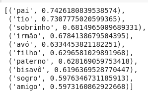
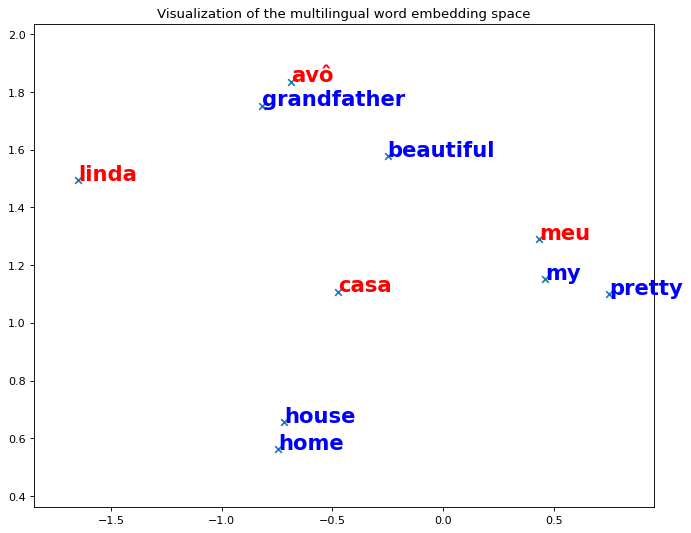
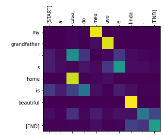
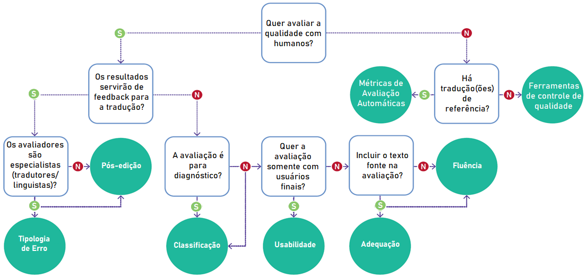

4 Tradução Automática
Abordagens e Avaliação
Vídeo (Palestra relacionada)
4.1 Introdução
A tradução automática (TA), também conhecida como tradução de máquina (em inglês, machine translation ou MT), refere-se à tradução de um texto eletrônico por um computador de uma língua para outra sem intervenção humana. Nesse sentido, convencionou-se chamar de língua (ou texto) fonte a língua de partida (origem) e língua (ou texto) alvo a língua de chegada (destino ou saída). Além de envolver a análise e interpretação (NLU) da língua-fonte e a geração (NLG) da língua-alvo, há a premissa fundamental de gerar uma saída que seja semanticamente equivalente (transmite o mesmo significado) à entrada.
Nos últimos anos, a TA evoluiu significativamente com o avanço de modelos estatísticos e neurais. Atualmente, ela é amplamente utilizada em todo o mundo por governos, indústria da tradução, consumidores finais e em pesquisas em uma variedade de aplicações.
Os primeiros sistemas bem-sucedidos de TA datam do final dos anos 1950 e início dos anos 19601, com os experimentos de Georgetown. No entanto, é possível encontrar referências a tentativas de tradução automática no século XVII (Hutchins, 2001). Desde então, diferentes abordagens para a TA foram desenvolvidas, incluindo abordagens baseadas em regras, exemplos, estatísticas e, mais recentemente, a TA neural, apresentadas brevemente nas diversas seções deste capítulo.
Hoje em dia, a TA desempenha um papel importante não apenas no âmbito comercial, mas também no âmbito social e político. Ela é amplamente utilizada em diversas aplicações de comunicação, que incluem2:
- Texto para texto: o usuário insere um texto-fonte e obtém uma versão traduzida em formato de texto;
- Texto para fala: o usuário insere um texto-fonte e obtém uma versão falada na língua-alvo;
- Fala para texto: o usuário fala no idioma fonte e obtém uma versão traduzida em formato de texto;
- Fala para fala: o usuário fala no idioma fonte e obtém uma versão falada na língua-alvo;
- Imagem (de palavras) para texto: o usuário insere uma imagem contendo um texto e obtém a tradução desse texto.
Devido à ampla utilização da TA atualmente, seu impacto pode ser observado em nossa sociedade. Por essa razão, a avaliação da TA (tema da Seção Avaliação da Tradução Automática) tornou-se mais importante, visando garantir a qualidade da tradução. Além da avaliação, este capítulo descreve as principais abordagens para a TA (Seção Abordagens). No decorrer deste capítulo, alguns conceitos-chave são explicados para que você possa acompanhar os desenvolvimentos.
4.2 Abordagens
A tradução automática pode ser realizada de diversas maneiras, desde a mais simples (tradução direta), que envolve a tradução palavra-a-palavra (ou sequência de palavras), até a mais utilizada na atualidade, que é a tradução baseada em redes neurais artificiais (tradução neural). Na trajetória entre a tradução direta e a tradução neural, explicaremos também abordagens intermediárias, como a baseada em regras, a tradução por interlíngua e a tradução estatística.
Para tanto, vamos traduzir a sentença “A casa do meu avô é linda.” para o inglês. Como isso aconteceria de acordo com as abordagens mais utilizadas (ou tradicionais) na tradução automática?
4.2.1 Tradução direta
Na tradução direta ocorre o mapeamento direto de palavras-fonte para palavras-alvo sem passar por outros níveis de análise3. Assim, no nosso exemplo, os caracteres seriam combinados em palavras e cada uma seria mapeada diretamente para seu equivalente em inglês usando, por exemplo, um léxico bilíngue. Utilizando o léxico bilíngue disponível no github do MUSE4 e a tradução palavra-a-palavra, nossa saída seria como apresentado em Exemplo 4.1:
Exemplo 4.1
Entrada: A casa do meu avô é linda.
Saída: _ house _ my granddad _ beautiful .
onde as palavras para as quais não se encontrou um equivalente no léxico consultado foram substituídas por _5.
Vejam que neste processo de tradução não há nenhum processamento referente às línguas envolvidas, uma vez que o resultado é obtido via casamento de padrão, seguido da substituição de uma palavra por outra com base em uma lista de pares de palavras.
Obviamente a abordagem de tradução direta apresenta diversas limitações, como não ser capaz de lidar com a estrutura (sintaxe) da língua, que, como pode ser visto no Capítulo Sequência de caracteres e palavras, é fundamental para o tratamento adequado da língua. A tradução direta foi uma das primeiras abordagens a serem investigadas e não é mais utilizada nos tradutores atuais.
4.2.2 Tradução Automática Baseada em Regras
Como o nome sugere, os sistemas de TA baseados em regras (em inglês, Rule-based Machine Translation ou RBMT) são sistemas baseados em conhecimento desenvolvidos por meio da especificação de regras linguísticas, que levam em consideração morfologia, sintaxe e semântica das línguas envolvidas, além dos léxicos bilíngues de ambos os idiomas de origem e de destino6. Essas regras e léxicos são formuladas e criados manualmente por especialistas em linguagem.
A partir desses recursos, a RBMT é capaz de realizar mapeamentos mais complexos como os que consideram a sintaxe das línguas fonte e alvo. Assim, no nosso exemplo, uma possível regra que poderia ser aplicada é a que indica a inversão da posição do sujeito que possui a casa com o uso do “apóstrofo s” gerando “My grandfather’s house is beautiful.” ao invés de “The house of my grandfather is beautiful.”
Assim, vê-se que o processamento automático necessário para a tradução baseada em regras é um pouco mais complexo do que aquele aplicado na tradução direta, uma vez que agora é preciso saber o papel de cada palavra na sentença-fonte, ou seja, saber que “casa” é um substantivo e que “do” é uma combinação da preposição “de” e determinante (artigo definido “o”) para que a regra apresentada em Quadro 4.1 seja aplicada corretamente. A regra especifica que sempre que for encontrado, na sequência-fonte, um substantivo (<SUB>) seguido da preposição (<PREP>) “de” combinada (+) com os artigos (<DET>) “a” ou (|) “o” deve-se gerar como saída o apóstrofo (’) seguido de “s” e o substantivo equivalente na língua-alvo. O símbolo “=>” separa o que deve ser considerado na língua-fonte (à esquerda) e o que deve ser gerado na língua-alvo (à direita).
Quadro 4.1 Exemplo de regra para a tradução automática baseada em regras
Para se determinar o “papel” de cada palavra na sentença o processamento necessário é o da etiquetagem morfossintática ou, do inglês, part-of-speech tagging descrito no Capítulo Sequência de caracteres e palavras.
Apesar de realizar um processamento automático um pouco mais complexo, a desvantagem da tradução baseada em regras não está aí, mas sim na necessidade de mapear o conhecimento linguístico em regras corretas, genéricas e abrangentes o suficiente para que sejam aplicáveis a vários exemplos. Vejam que esse mapeamento envolve, necessariamente, o conhecimento da língua-fonte, da língua-alvo, e de como o processo de tradução de uma para a outra deve ocorrer. Além de um processo trabalhoso, a geração de regras é também limitada, pois, como a língua está em constante mudança, o conjunto de regras gerado tem que ser constantemente atualizado e revisado. Além disso, a tradução de/para outra língua necessita de um novo conjunto de regras. Isso porque a tradução por transferência entre duas línguas requer que a representação do conhecimento extraído da língua-fonte, e que vai ser mapeado para a língua-alvo, seja capaz de abrigar todas as características de ambas as línguas, tornando-a específica para aquele par. Analogamente, o desenvolvedor tem que ter muito conhecimento de ambas as línguas ou a equipe deve contar com linguistas/tradutores, o que torna os sistemas caros de se implementar. Além disso, a saída dos sistemas de regras pode apresentar pouca fluência, já que as traduções são fornecidas por meio de regras.
A grande vantagem dos sistemas de regras é que, como não são necessários textos bilíngues para seu treinamento, esses sistemas são excelentes para traduções de idiomas com recursos limitados. Além disso, esses sistemas permitem que o desenvolvedor tenha um controle maior, sendo possível identificar exatamente onde estão os problemas, e a saída (texto-alvo) é relativamente previsível. Tanto regras quanto léxicos podem ser refinados e personalizados, com a adição de mais (novas) regras e entradas bilíngues para aprimorar a tradução. Outro ponto interessante, é que o conhecimento é legível por seres humanos o que facilita a manutenção. Os sistemas de TA baseados em regras foram os primeiros sistemas comerciais de TA na década de 1970 e abriram caminho para mais pesquisas em TA após o relatório ALPAC, que cortou os fundos (Seção 4.3.1).
4.2.3 Tradução por interlíngua
Mas será que esse conceito de transferência entre línguas não pode ser estendido para um número maior de línguas, ou seja, considerando um cenário multilíngue? Sim, essa é a ideia da tradução por interlíngua, que se propõe a usar uma língua intermediária – metalíngua – que é independente das línguas envolvidas na TA e ao mesmo tempo é capaz de representar informações de qualquer outra língua. Essa metalíngua, de natureza artificial, é não ambígua e, portanto, mais simples de processar do que qualquer linguagem natural. Assim, o processo de tradução entre duas línguas quaisquer é composto de duas etapas de traduções supostamente mais simples: uma realizada entre a língua-fonte e a metalíngua, e outra realizada entre esta metalíngua e a língua-alvo.
Mas será que essa abordagem simplifica o processo? Sim. Para ficar claro, imagine o seguinte cenário onde existem documentos escritos em n línguas distintas e queremos traduzi-los de e para quaisquer dessas línguas. Poderíamos construir arranjos de n tradutores7 automáticos para cada par de línguas (n1-n2, n1-n3, n1-n4, …, n2-n1, n2-n3, n2-n4, …) seguindo o modelo de transferência (tradução automática baseada em regras). Mas a tradução por interlíngua mostra-se mais vantajosa. Podemos definir uma metalíngua e dividir a tarefa em n grupos de especialistas/tradutores, cada um responsável por uma única língua, li (de preferência sua língua materna). Caberá a cada grupo construir um tradutor (lembre-se: bem mais simples!), ou codificador, de li para a metalíngua, e outro, decodificador, da metalíngua para li. Evidentemente todos os grupos compartilham o mesmo conhecimento sobre a língua intermediária.
Considerando que cada grupo fará sua parte, ao final, as possíveis combinações desses módulos de tradução darão origem a todos os tradutores almejados. Por exemplo, para traduzir li para lj, juntamos o módulo codificador de li com o módulo decodificador para lj. Terão sido construídos 2n módulos de traduções mais simples, portanto, menos esforço do que o exigido para os tradutores bilíngues. Uma outra consequência é a possibilidade de se avaliar as traduções por meio da tradução inversa, já que os módulos independentes permitem a tradução nos dois sentidos.
Esse ideal foi compartilhado algumas vezes, no passado, por vários grupos de pesquisa acadêmica, mas infelizmente a prática evidenciou vários problemas. O maior deles é, segundo os críticos, a ingenuidade em se acreditar possível criar uma linguagem capaz de representar o significado de todas as outras, portanto, universal. Um outro problema – ou decorrente deste – é a adoção unânime de uma dada língua intermediária pelos grupos de línguas distintas, onde cada um deles reivindica alterações e adaptações, escancarando a inexistência de um núcleo verdadeiramente universal. Por essas e outras razões é que esse modelo não substituiu o modelo por transferência bilíngue.
No final dos anos 1990, o português brasileiro estava representado, pelo NILC8, numa iniciativa da ONU para construção de tradutores para as línguas mais faladas no mundo, o Projeto UNL9. Esse projeto tinha por objetivo o desenvolvimento de um sistema multilíngue de tradução automática baseada numa interlíngua de natureza semântica – a Universal Networking Language (UNL) – desenvolvida por pesquisadores vinculados à Universidade das Nações Unidas, órgão da ONU, em Tóquio10.
O paradigma linguístico (baseado em regras e interlíngua), no qual o conhecimento linguístico é explicitamente mapeado em recursos como regras, dominou o cenário da tradução automática até a década de 1980, quando abordagens baseadas em corpus (empíricas) surgiram. Aliadas à motivação de tentar superar as limitações da tradução baseada em regras, essas abordagens foram impulsionadas por dois fatores: (1) os avanços no hardware necessário para processamentos computacionais mais pesados, e (2) a disponibilidade maior de recursos bilingues, em especial os corpus paralelos. As próximas seções tratam das abordagens baseadas em corpus: a tradução baseada em exemplos, a tradução estatística e a tradução neural.
4.2.4 Tradução Automática Baseada em Exemplos
Os sistemas de TA baseada em exemplos (do inglês, Example-based Machine Translation ou EBMT), também conhecidos como tradução por analogia, estão frequentemente associados à publicação do artigo de Nagao (1984), no qual o autor propõe um modelo baseado na imitação de exemplos de tradução de frases semelhantes, buscando utilizar a ideia de aprender a traduzir a partir de exemplos existentes (Koehn, 2020). Os sistemas de exemplos utilizam informações extraídas (sequências de palavras) de exemplos em corpora bilíngues de pares de tradução, alinhados em nível de sentença, ao qual convencionou-se chamar de corpora paralelos.
Por meio dessa abordagem, exemplos como os ilustrados no Quadro 4.2 serviriam de base para o sistema aprender traduções de trechos de texto, como as ilustradas em Quadro 4.3.
Quadro 4.2 Exemplos para a tradução baseada em exemplos
Quadro 4.3 Trechos aprendidos
A partir dos trechos aprendidos, o sistema baseado em exemplos seria capaz de combiná-los para, a partir da entrada, gerar a saída apresentada em Exemplo 4.2:
Exemplo 4.2
Entrada: A casa do meu avô é linda.
Saída: The house _ my grandfather _ beautiful.
Devido ao uso de diferentes métodos e técnicas, de acordo com Hutchins (2005, p. 63): “não parece haver um consenso claro sobre o que é ou o que não é um sistema de exemplos”. Para Carl; Way (2003, p. xix), uma definição analítica dos sistemas de exemplos era difícil, pois, segundo ele, tais sistemas “assumem uma posição entre os sistemas baseado em regras e os estatísticos” ao utilizar abordagens tanto baseadas em regras quanto orientadas por dados11. No entanto, tanto os sistemas baseados em exemplos como os estatísticos se enquadram no paradigma de TA baseada em corpus. Enquanto alguns autores veem os sistemas baseados em exemplos como um paradigma em si mesmo, outros consideram os sistemas estatísticos como um tipo de sistema de exemplos, já que os primeiros sistemas estatísticos surgiram no final da década de 1980.
4.2.5 Tradução Automática Estatística
Os sistemas de TA estatísticos (em inglês, Statistical Machine Translation ou SMT) foram apresentados pela primeira vez por Brown et al. (1988); no entanto, a ideia de usar métodos estatísticos para traduções automáticas foi introduzida pela primeira vez por Weaver em 1949 (Brown et al., 1988, p. 71). Desde a primeira publicação de Brown et al., a equipe da IBM desenvolveu para a empresa o primeiro sistema estatístico funcional e houve um aumento drástico na pesquisa em TA estatística na área.
A ideia geral dos sistemas estatísticos é usar modelos estatísticos para extrair pares de tradução de corpora bilíngues. Podem ser encontradas três abordagens principais para a TA estatística:
- TA estatística baseada em palavras (Word-based Statistical Machine Translation): alinha12 palavras individuais no texto-fonte a palavras no texto-alvo e calcula a probabilidade da tradução. Também permite a exclusão e inserção de palavras.
- TA estatística baseada em frases (em inglês, Phrase-based Statistical Machine Translation ou PBSMT): alinha frases (não frases linguísticas, mas fragmentos de frases e palavras) no texto-fonte a frases no texto-alvo, comparando frases e seus vizinhos frasais ao considerar uma tradução. Essas frases também são chamadas de n-gramas, que são sequências contínuas de n palavras em sequência, ou seja, um unigrama é uma palavra, um bigrama são duas palavras, um trigrama são três palavras etc. A TA estatística baseada em frases é o tipo de abordagem estatística mais utilizado.
- TA estatística baseada em sintaxe: esses modelos traduzem unidades sintáticas usando árvores sintáticas geradas por analisadores sintáticos (Capítulo Sequência de caracteres e palavras).
Independente da estratégia escolhida, na tradução estatística a probabilidade determina como um texto-fonte deve ser traduzido para um texto-alvo. De acordo com a estratégia escolhida, essa probabilidade pode ser calculada considerando apenas palavras ou também sequências de palavras (frases). Essas frases são sequências de tokens (não necessariamente palavras) como “a casa do” ou “linda .” (onde o ponto final faz parte da frase). Seja considerando apenas palavras ou frases, a tradução é realizada com base em dois modelos computacionais: (1) um modelo de tradução que especifica como mapear texto-fonte em texto-alvo e (2) um modelo de língua que especifica como gerar um texto-alvo fluente. Desse modo, o modelo de tradução tenta maximizar a acurácia da tradução, enquanto o modelo de língua tenta maximizar a fluência da sentença gerada na língua-alvo (Seção Avaliação da Tradução Automática).
Para tentar tornar esses conceitos menos abstratos, vamos retomar nosso exemplo da sentença “A casa do meu avô é linda.”. Nesse caso, o modelo de tradução poderia ser baseado em probabilidades de tradução de frases como os gerados para o corpus FAPESP (Aziz; Specia, 2011) com o auxílio do Moses13, como ilustrado na Tabela 4.1.
| id | frase-fonte (português) | frase-alvo (inglês) | probabilidade |
|---|---|---|---|
| 1 | a casa do | ’ house | 0.0207779 |
| 2 | a casa do | the house from | 0.0623338 |
| 3 | a casa | the house | 0.297619 |
| 4 | a casa | the home | 0.0646474 |
| 5 | do meu | of my | 0.0813954 |
| 6 | do meu | that of my | 0.191576 |
| 7 | meu avô | my grandfather | 0.662453 |
| 8 | meu avô , meu pai , eu | my grandfather , my father , me | 0.0623338 |
| 9 | avô | grandfather | 0.916667 |
| 10 | é | is | 0.611613 |
| 11 | é | é | 0.794943 |
| 12 | linda | beautiful | 0.0389678 |
| 13 | linda | pretty | 0.00259724 |
Com base nas probabilidades da Tabela 4.1, diversas opções de tradução poderiam ser geradas como as apresentadas no Exemplo 4.3.
Exemplo 4.3
E qual dessas sentenças o sistema escolheria como saída? Isso depende de alguns fatores que não vamos detalhar aqui, mas podemos dizer que o modelo de linguagem (Capítulo Modelos de linguagem) tem um papel fundamental na seleção da melhor sentença candidata. Nesse caso, o modelo de linguagem diz qual é a melhor sentença com base na probabilidade de ela ser encontrada na língua-alvo, ou melhor, no corpus de treinamento usado para gerar o modelo de língua-alvo.
Assim, tanto o modelo de tradução quanto o modelo de linguagem são treinados a partir de corpus. No caso da tradução estatística, as probabilidades são determinadas contando-se as frequências de ocorrência das palavras em grandes quantidades de textos (os corpora) paralelos. Um exemplo de corpus paralelo português-inglês é o coletado por Aziz; Specia (2011), o Corpus FAPESP17, que serviu de base para a geração das probabilidades apresentadas na Tabela 4.1. Para a geração do modelo de tradução, a probabilidade de uma frase em português ser traduzida para uma frase em inglês é calculada com base na co-ocorrência dessas frases no corpus paralelo. Para a geração do modelo de língua, a probabilidade de uma frase em inglês é calculada com base na ocorrência dessa frase na parte em inglês do corpus paralelo (ou de outro corpus monolíngue na língua-alvo).
Geralmente os modelos de tradução e de língua consideram frases de um tamanho máximo definido como parâmetro do treinamento. Quanto maior o tamanho da frase, maior é o contexto sendo considerado e, como consequência, mais coerente poderá ser a sentença gerada (Jurafsky; Martin, 2023). Porém, quanto maior o tamanho da frase, maiores serão o tempo e a quantidade de processamento necessários para realizar o treinamento dos modelos.
As vantagens dos modelos estatísticos são que, com mais dados utilizados no treinamento dos sistemas, não apenas a qualidade geral aumenta, mas, com o uso de um modelo de linguagem, as traduções estatísticas ganharam fluência em relação às abordagens anteriores. Além disso, a TA estatística permitiu um uso mais eficiente de recursos humanos e de dados. As desvantagens dessa abordagem são o custo de criação de corpora paralelos, especialmente para idiomas com recursos limitados. Além disso, a TA estatística tende a ter dificuldade com pares de idiomas com ordem de palavras diferentes.
Em 2007, o sistema open-source PBSMT mais famoso, desenvolvido por Koehn et al. (2007), foi lançado: o Moses SMT toolkit. Ao mesmo tempo, o Google lançou seu famoso Google Tradutor com abordagens estatísticas. Vale ressaltar que os modelos estatísticos conseguiram obter grande sucesso devido ao “aumento do poder de computação e armazenamento de dados, juntamente com a disponibilidade cada vez maior de recursos de texto digital como consequência do crescimento da Internet” (Koehn, 2009, p. 18). Devido à eficiência e precisão da abordagem estatística em relação às anteriores, ela se tornou a abordagem mais amplamente utilizada naquela época. Sistemas de tradução estatística baseada em frases (PBSMT) como os de Koehn et al. (2003) e Och; Ney (2004) eram o estado da arte até serem sucedidos pela tradução neural, a partir de 2015. De fato, a estratégia por trás do tradutor automático do Google foi a PBSMT por uma década (aproximadamente de 2006/2007 até 2016/2017)18. Atualmente, o Google e praticamente todos os sistemas de tradução online, bem como pesquisas nesta área usam a tradução neural (neural machine translation, NMT) ou algum sistema híbrido (estatístico e neural).
4.2.6 Tradução Automática Neural
Os sistemas de TA neural (em inglês, Neural Machine Translation ou NMT) foram introduzidos pela primeira vez na década de 1990 com alguns artigos sugerindo como redes neurais poderiam ser usadas para TA19 (Way; Forcada, 2018). No entanto, a quantidade dos dados usados para treinar esses modelos não era suficiente para produzir resultados razoáveis e, além disso, “a complexidade computacional envolvida excedia em muito os recursos computacionais daquela época, e, portanto, a ideia foi abandonada por quase duas décadas” (Koehn, 2020, p. 39).
Em geral, os modelos neurais consistem na construção de redes neurais end-to-end que mapeiam textos paralelos alinhados e são treinados para maximizar a probabilidade de uma sequência alvo Y, dada uma frase de origem X, sem informações linguísticas externas adicionais (Castilho et al., 2017b). Os sistemas neurais podem ser construídos com apenas uma rede em vez de uma sequência de tarefas separadas, como seu predecessor (a tradução estatística).
Com a publicação de resultados impressionantes em avaliação automática (Bahdanau et al., 2015; Bojar et al., 2016; Sennrich et al., 2016), os sistemas neurais geraram grande expectativa, especialmente porque a indústria de tradução busca melhorar a qualidade da TA para minimizar custos (Moorkens, 2017). A adoção dos sistemas neurais nos últimos anos tem sido extensiva, com um número crescente de provedores de TA e grupos de pesquisa concentrando seus esforços e recursos no desenvolvimento e implantação de sistemas NMT (Castilho et al., 2019a).
Na tradução neural, redes neurais artificiais são usadas para fazer a tradução de uma sentença-fonte para uma sentença-alvo. Uma rede neural artificial pode ser entendida como uma composição de diversas unidades de processamento (os neurônios artificiais) conectadas entre si, em camadas. Cada unidade de processamento recebe uma entrada numérica e gera uma saída numérica. A saída é calculada de acordo com os “pesos” (\(w\)) e as “entradas” (\(x\)) associados à unidade e uma função que determina como a saída deve ser calculada. Por exemplo, vamos supor que um neurônio artificial seja governado pela função \(x^2\). Nesse caso, se a entrada para esse neurônio for o número \(2\) então a saída será \(4\), se for \(3\) a saída será \(9\), se for \(-1\) a saída será \(1\) e assim por diante. Os pesos são usados para ajustar o aprendizado do neurônio e são uma das partes mais importantes da definição de uma rede neural artificial.
Na tradução neural, diversas camadas de neurônios são usadas para aprender como traduzir uma sentença-fonte em uma sentença-alvo a partir de um corpus paralelo. Esse aprendizado geralmente demanda muito poder computacional20 e tempo, pois é realizado a passos pequenos em diversos ciclos de processamento21 das sentenças paralelas. E qual é a principal diferença metodológica da tradução neural para a estatística? Na NMT toda a sentença-fonte é considerada no aprendizado, de uma vez, e nos dois sentidos (da esquerda para a direita e da direita para a esquerda), ou seja, não há a quebra em frases como ocorria na PBSMT, nem a divisão clara entre modelo de tradução e modelo de língua. Dessa forma, a tradução gerada por um sistema NMT tende a ser mais fluente e natural, como ilustrado na Figura 4.122.
Os modelos de tradução neural baseiam-se fortemente em duas tecnologias que se tornaram bastante usuais em PLN: embeddings e modelo de atenção. As embeddings (Capítulo Representação vetorial e semântica distribucional), são formas de representação de unidades lexicais (geralmente palavras) nas quais as unidades são mapeadas para vetores em um espaço de n (100, 300 ou mais) dimensões. Ao representar palavras como vetores densos notou-se que é possível mapear características linguísticas (morfológicas, sintáticas e semânticas) nesse espaço vetorial. Por exemplo, na Figura 4.2 é possível observar a proximidade semântica da palavra “avô” com outras palavras a partir das word embeddings do NILC23 como “pai”, “tio”, “sobrinho” etc.

Usando as word embeddings bilíngues português e inglês do MUSE24 é possível observar as similaridades entre línguas como ilustrado na Figura 4.3, onde as palavras em português aparecem em vermelho e as palavras em inglês, em azul. Essas word embeddings são usadas como forma de representação da língua nos modelos neurais de tradução automática.

Assim, a tradução neural não se baseia na combinação dos modelos de tradução e de língua, como faz a tradução estatística, mas sim em um modelo sequencial que prediz uma palavra por vez. O potencial deste modelo sequencial está na maneira como ele prediz as palavras: considerando toda a sentença-fonte e também o que já foi produzido para a sentença-alvo. Desde sua proposição, a modelagem sequencial neural passou por várias arquiteturas, indo desde as redes neurais recorrentes (em inglês, recurrent neural network ou RNN) usadas para codificação (em inglês, encoder) e decodificação (em inglês, decoder) até os mecanismos de atenção (em inglês, attention mechanism) (Bahdanau et al., 2015) que permitem ao decodificador focar em partes específicas da sentença de entrada em seu processo de geração da saída.
Nesse momento, os Transformers (Vaswani et al., 2017) são o estado da arte na tradução. A Figura 4.4 ilustra a tradução da sentença de exemplo, em português, para inglês usando Transformers25. Nessa ilustração, quanto mais clara (amarelo, verde claro, azul claro etc.) a célula que une a linha da palavra em inglês com a coluna da palavra em português, maior a “força” da relação entre elas. Por exemplo, observa-se uma forte relação entre “my” e “meu”, “grandfather” e “avô”, “home” e “casa”, e “beautiful” e “linda”.

Contudo, assim como todas as demais abordagens, a tradução neural também tem suas limitações. Uma delas é que, diferentemente da PBSMT onde é possível “olhar” para os modelos aprendidos e entender o que foi usado na tradução (como as frases da Tabela 4.1), a tradução neural é considerada uma caixa-preta (black box): entender o que pode ter sido considerado para gerar a tradução depende de desvendar uma visualização do modelo de atenção (como o da Figura 4.4), já que as previsões dos modelos neurais consistem em milhões de parâmetros. Isso dificulta a extensão dos modelos previamente treinados e coloca em dúvida a robustez do sistema. Além disso, por ser uma abordagem relativamente nova, a tradução neural ainda enfrenta alguns desafios, como o desempenho ruim em condições fora do domínio e para idiomas com recursos limitados.
Além disso, é possível observar que as estratégias de tradução baseadas em corpus são fortemente influenciadas pelo corpus usado no treinamento. Por exemplo, os modelos estatísticos só terão a capacidade de traduzir uma palavra se ela tiver ocorrido um número significativo de vezes no corpus de treinamento, caso contrário não haverá uma frase correspondente contendo essa palavra e o sistema não conseguirá gerar uma tradução completa para a sentença original. No caso da tradução neural, isso é um pouco amenizado pelo uso de embeddings de unidades menores (em inglês, subword units) do que as palavras, as quais conseguem aproximar palavras desconhecidas às possíveis correspondências conhecidas26. Por exemplo, se o “a” for esquecido no “linda” da Figura 4.1 o Google tradutor consegue gerar a mesma saída, sem problema. O tratamento de palavras e subwords é abordado no Capítulo Sequência de caracteres e palavras.
Outro ponto a se observar é que os sistemas neurais precisam de um corpus maior e de melhor qualidade do que os estatísticos, pois eles são rápidos em memorizar exemplos mal-formados (Khayrallah; Koehn, 2018). Por isso, para algumas línguas com menos recursos (em inglês, low-resourced languages) os sistemas estatísticos ainda podem apresentar um desempenho melhor do que alguns sistemas neurais. E, por esse motivo, muitas pesquisas atuais têm enfatizado o desenvolvimento de técnicas de aumento de dados (em inglês, data augmentation) para sistemas neurais.
Apesar disso, os sistemas neurais são o estado da arte na área de tradução automática (agora em 2023), apresentando, especialmente, uma fluência muito superior aos sistemas estatísticos, o que dificulta a avaliação humana da tradução, a qual deve ser mais cuidadosa aos erros de acurácia.
Atualmente, existem várias técnicas de aprendizado profundo para os sistemas neurais, diferentes ramos, orientações de pesquisa e tendências27.
4.3 Avaliação da Tradução Automática
Devido à importância da tradução no mundo globalizado de hoje, o interesse na avaliação da qualidade da tradução (AQT – do inglês, Translation Quality Assessment ou TQA) cresceu a ponto de a avaliação da TA (ATA) se tornar um subcampo em rápido crescimento dentro da TA28. No entanto, como a tradução é um processo multifacetado que envolve fatores cognitivos, linguísticos, sociais, culturais e técnicos, definir e medir a qualidade da tradução também reflete essa complexidade (Castilho et al., 2018). A AQT tem sido um tópico muito discutido em estudos de tradução, tecnologia da tradução e na indústria de tradução e localização, mas ainda não há muito consenso sobre o que é e como ela deve ser feita (Castilho et al., 2018) 29.
Aqui, faremos a distinção entre a AQT e a ATA: enquanto a AQT abrange a avaliação tanto das traduções humanas quanto das traduções automáticas, a ATA se concentra exclusivamente na avaliação da qualidade dos sistemas de TA. Nesta Seção, iremos definir a avaliação da TA, apresentar diferentes abordagens e discutir algumas das avaliações mais influentes na sua história, destacando a importância de realizar a avaliação dos sistemas de TA.
4.3.1 O que é Avaliação da Tradução Automática?
A avaliação da Tradução Automática (ATA) é a prática de analisar a saída de tradução de um sistema (ou sistemas) de TA e julgar a qualidade dessa tradução com base em critérios estabelecidos. As abordagens para a ATA incluem avaliação automática, usando métricas automáticas Seção 4.3.3, ou avaliação manual humana Subseção Métricas Humanas, realizada por pessoas, e às vezes uma combinação das duas. O fluxograma da Figura 4.5 foi proposto por Doherty et al. (2018) para ajudar educadores e tradutores nos vários tipos de ATA.

Devido à falta de consenso no campo dos estudos de tradução e na indústria da tradução sobre o que constitui uma “boa” tradução, várias abordagens para a avaliação da TA surgiram. Portanto, a ATA pode ser realizada de várias maneiras diferentes, com várias abordagens, e não existe um único método que seja suficiente para abordar todos os propósitos de avaliação (Hovy et al., 2002).
Tradicionalmente, a avaliação da TA foi dividida em dois paradigmas: avaliação glass-box (caixa de vidro) e avaliação black-box (caixa-preta). Enquanto a primeira se preocupada com “a qualidade de um sistema com base em suas propriedades internas” (Dorr et al., 2011, p. 744) e foi amplamente utilizada com sistemas baseados em regras (Seção 4.2.2), a última “mede a qualidade de um sistema apenas com base em sua saída, sem considerar os mecanismos internos do sistema de tradução” (ibid). As abordagens de avaliação black-box são o foco desta Seção.
A avaliação desempenha um papel essencial na TA, pois fornece informações sobre o funcionamento do sistema, quais as partes são eficazes e quais as áreas que precisam de melhorias. No entanto, a avaliação é um problema complexo, pois não existe uma única tradução correta para uma determinada fonte, e “pode haver várias traduções corretas possíveis” (ibid).
Para julgar a qualidade de uma determinada saída de TA, é necessário definir o que a “qualidade” significa para essa tarefa de tradução especificamente. Mas quem define o que é qualidade da tradução? A resposta para essa pergunta, definindo o que constitui uma tradução “boa” ou “ruim”, tem sido e ainda é amplamente debatida nos diferentes campos relacionados à tradução. Para O’Brien et al. (2011, p. 55), a qualidade está relacionada à opinião do cliente, mas na indústria da tradução, a avaliação de qualidade “é gerenciada por intermediários na cadeia de fornecimento e demanda”, geralmente usando uma abordagem única para todos (em inglês, one size fits all). Para a ATA, a avaliação de qualidade depende do uso pretendido da tradução. Portanto, qualidade pode significar uma tradução fluente que pareça ter sido escrita por um falante nativo; ou uma tradução precisa que transmita todo o significado expresso no texto de origem; ou talvez qualidade signifique uma tradução que seja ao mesmo tempo fluente e adequada. Além disso, qualidade pode ser definida como uma tradução fácil de ser pós-editada por alguns, enquanto outros podem definir qualidade como uma tradução que os usuários finais possam usar. E alguns podem ainda querer que todos esses critérios sejam atendidos para se ter uma tradução de qualidade, enquanto outros podem definir qualidade da tradução com outros critérios totalmente diferentes.
Em resumo, ao avaliar a saída da TA, essencialmente estamos tentando determinar graus de “qualidade” e “não qualidade” dessa tradução para um público específico, uma vez que um critério de qualidade que seja crucial em determinada cenário, pode ser irrelevante em outros (Dorr et al., 2011).
Nesse sentido, alguns projetos de tradução que merecem referência são:
- ALPAC Report (1966): examinou a qualidade e eficácia dos sistemas de TA nos Estados Unidos. O relatório concluiu que a TA não era útil devido à baixa qualidade, o que resultou em uma redução significativa no financiamento para o processamento de linguagem natural (PLN) e TA naquela época. O relatório também desencorajou discussões sobre avaliação dentro da comunidade de PLN por muitos anos.
- DARPA Initiative (1992): uma das primeiras iniciativas na avaliação de TA nos anos 1990. A metodologia de avaliação era baseada em julgamentos humanos, onde os avaliadores atribuíram uma pontuação de 1 a 5 para as frases traduzidas automaticamente, comparando-as ao texto original e a traduções de referência humanas produzidas por tradutores profissionais.
- FEMTI (2002): foi um esforço para padronizar o processo de avaliação de TA, organizando os métodos existentes de ATA e relacionando-os com o propósito e contexto dos sistemas, fornecendo “diretrizes para a seleção de características de qualidade a serem avaliadas, dependendo da tarefa esperada, dos usuários e das características de entrada de um sistema de tradução automática” (Estrella et al., 2009).
- GALE (2005): teve como objetivo desenvolver e aplicar tecnologias de software para TA de grandes volumes de fala e texto em várias línguas. Foi estabelecido um protocolo de avaliação que utilizava métodos automáticos, humanos, baseados em tarefas e semi-automáticos, com foco na taxa de erro de tradução mediada por humanos (HTER).
- EuroMatrix (2006): financiado pela Comissão Europeia, esta iniciativa construiu sistemas de TA estatísticos e híbridos para diversos idiomas europeus. A avaliação dos sistemas de tradução automática incluiu avaliações automáticas com base em onze métricas, incluindo BLEU (ver Subseção Bilingual Evaluation Under-study (BLEU)), METEOR, Translate Error Rate, Word Error Rate, entre outros (Seção 4.3.3); e avaliações humanas que consistiram em classificações de fluência e adequação, ranking, tempo de leitura, tempo de pós-edição, teste de preenchimento de lacunas, clareza e informatividade (“Euromatrix. Survey of Machine Translation Evaluation”, 2007).
- WMT (2006): começou como o Workshop de Tradução Automática Estatística e progrediu para a Conferência de Tradução Automática em 2016, tem sido uma grande contribuinte para o avanço da pesquisa em avaliação de TA. Ao longo dos anos, a WMT tem utilizado diferentes metodologias de avaliação. Desde 2008, a WMT realiza uma tarefa compartilhada, ou esforço colaborativo, (em inglês, shared task) de avaliação que compara uma ou mais traduções de referência com as saídas dos sistemas de TA e tem utilizado, principalmente, a métrica BLEU, embora essa tenha sido superada por diversas métricas diferentes. Em relação à avaliação manual, a WMT experimentou e implementou uma ampla gama de metodologias, incluindo julgamentos de fluência e adequação (2006 e 2007), diferentes avaliações de classificação (2007-2016), pós-edição e compreensão de frases (2009-2010), e avaliação direta e conjuntos de testes (desde 2016). Além disso, a shared task da WMT vem realizando avaliações em nível de documento desde 2019.
- TAUS (2005): fundada em 2005 como uma rede de dados linguísticos com um extenso repositório de dados e uma rede de engenharia de linguagem humana, a TAUS tem estado na vanguarda das tentativas de estabelecer indicadores para a avaliação da qualidade de tradução, desenvolvendo o Framework de Avaliação Dinâmica de Qualidade (DQF) em 2011. O modelo é uma estrutura de avaliação baseada em diferentes tipos de conteúdo, propósito do uso, ferramentas, processos e outros aspectos.
- QTLaunchPad (2012): projeto colaborativo financiado pela União Europeia (2012-2014) que reuniu e forneceu dados e ferramentas para a avaliação da qualidade de tradução, além de métricas de qualidade compartilhadas para tradução humana e automática (Uszkoreit; Lommel, 2013). O projeto contribuiu para o projeto de TA QT21 (2015-2018), cujo objetivo era desenvolver uma avaliação aprimorada. O QTLaunchPad desenvolveu o framework de Métricas de Qualidade Multidimensionais (MQM), que descreve e define métricas personalizadas de qualidade de tradução para avaliar a qualidade de textos traduzidos. MQM é amplamente utilizado como um padrão para métricas de avaliação humana em MTEval. Como parte do QT21, o MQM e o DQF (da TAUS) foram harmonizados, e atualmente, a Tipologia de Erros DQF da TAUS é um subconjunto reconhecido do MQM.
4.3.2 A importância de uma avaliação replicável
Como visto neste Capítulo, a avaliação da TA tem sido realizada desde o surgimento da própria TA. No entanto, o relatório ALPAC tornou a avaliação quase um tópico proibido na comunidade de PLN (Paroubek et al., 2007), e até hoje, a avaliação de TA, especialmente a avaliação humana, é considerada “desnecessária” em alguns momentos. Não é raro encontrar artigos de pesquisa usando uma única métrica para avaliar seu sistema (geralmente pontuações BLEU – ver Seção 4.3.3, e ainda mais comum são os artigos de pesquisa com avaliação humana muito limitada e falha, e até mesmo artigos de pesquisa sem avaliação humana alguma (Marie et al., 2021).
O avanço dos sistemas de TA gerou muita expectativa na comunidade, especialmente porque a indústria de tradução buscava uma melhoria na qualidade da TA para reduzir custos (Moorkens, 2017). À medida que os sistemas de TA neural se tornaram líderes no mercado, com uma clara melhoria na qualidade das traduções, surgiram reivindicações exageradas de que esses sistemas estavam “preenchendo as lacunas entre a tradução humana e a tradução automática” (Wu et al., 2016). Diante disso, pesquisadores na área de avaliação de TA alertaram a comunidade para ter cautela e não fazer promessas exageradas, além de enfatizarem a necessidade de mais pesquisas para lidar com as limitações dos sistemas de TA e realizar avaliações humanas mais abrangentes (Castilho et al., 2017b).
No entanto, as afirmações exageradas continuaram, com alguns declarando que seu sistema de TA neural havia atingido a “paridade humana” (em inglês, human parity) (Hassan et al., 2018) e outros alegando que a TA é um problema “resolvido” com uma qualidade de tradução “quase perfeita”. Como resposta, a fim de verificar essas alegações, dois estudos independentes (Toral et al., 2018) e (Läubli et al., 2018) reavaliaram os dados utilizados por Hassan et al. (2018) e descobriram que a escolha dos avaliadores, o contexto linguístico e a criação de traduções de referência têm um impacto significativo na avaliação de qualidade, apontando para falhas nas práticas atuais em avaliação de TA.
Como resultado, os pesquisadores de avaliação TA passaram a se envolver em discussões mais aprofundadas sobre a necessidade de aprimorar continuamente a metodologia de avaliação, “com o objetivo de superar as limitações das métricas automáticas e das abordagens humanas, evitar superestimativas na capacidade da TA e explicar os resultados aparentemente contraditórios da TA de forma mais abrangente” (Castilho et al., 2019a, p. 2). Além disso, os pesquisadores começaram a buscar diretrizes para avaliar a “paridade humana” na avaliação da TA (Läubli et al., 2020).
Então, quem precisa de avaliação de TA? Em resumo, todos os campos diferentes relacionados à tradução. Algumas questões precisam ser abordadas para que a avaliação seja confiável, tais como:
- O que a qualidade significa nesta avaliação? Como vimos, há um grande debate sobre a definição de qualidade, então, antes de avaliar um sistema de TA, o pesquisador precisa definir o que seria uma tradução “boa” e “ruim” nesse cenário.
- Que tipo de sistema está sendo avaliado? Dependendo do par de idiomas, os sistemas estatísticos podem mostrar um problema específico. Já os sistemas neurais são conhecidos por serem fluentes e conhecer a similaridade entre palavras, o que torna mais difícil detectar erros.
- Qual é o objetivo a ser alcançado com esta avaliação? Saber por que o sistema de TA está sendo avaliado é importante para decidir que tipo de avaliação precisa ser realizada. Por exemplo, se alguém quer saber se as implementações realizadas em um sistema de TA feito para lidar com expressões multipalavras resultaram em traduções corretas dessas expressões, uma análise linguística aprofundada da saída seria mais apropriada do que avaliar a fluência da saída.
Como podemos ver, a avaliação de TA é um problema complexo, e não é surpresa que tenha se estabelecido como um campo independente. Com os avanços na qualidade dos sistemas de TA atuais, a comunidade de avaliação precisa estar atualizada com os procedimentos que possam fornecer avaliações mais sólidas, capazes de confirmar ou refutar as alegações feitas, como afirmou Carl Sagan: “Alegações extraordinárias exigem evidências extraordinárias”.
4.3.3 Métricas Automáticas
Como vimos anteriormente, a ATA assume uma complexidade intrínseca devido a uma multiplicidade de fatores. Tipicamente, encontramos duas vertentes de avaliação: a avaliação automática e a avaliação humana (manual), ocasionalmente mescladas para compor uma abordagem híbrida. Nesta Seção, abordaremos as métricas automáticas mais predominantes, reconhecendo a sua influência no domínio da TA.
As métricas automáticas pioneiras empregadas na TA tiveram origem em outras áreas da PLN. Por exemplo, temos a Word Error Rate (WER), introduzida por Su et al. (1992), que originou-se do campo de reconhecimento da fala (Capítulo Texto ou fala?). Por sua vez, a ROUGE, desenvolvida por Lin (2004), teve sua origem na sumarização automática. Outra métrica muito usada anteriormente foi a F-measure, empregada em recuperação de informação (Capítulo Recuperação de Informação) e em diversas outras áreas do PLN, também encontrou aplicabilidade nesse contexto.
As Métricas de Avaliação Automática (MAA) são adotadas na TA quando se busca evitar a intervenção humana direta (Figura 4.5). As MAAs atuam como programas computacionais, recebendo as traduções de um sistema de TA e as traduções de referência (TR) como entrada, e produzindo uma pontuação numérica que reflete a similaridade entre as traduções de TA e TR.
A maioria das MAAs é classificada como métricas de referência (em inglês, reference-based metrics), exigindo a disponibilidade da TR, isto é, a tradução humana do texto em avaliação, a fim de serem empregadas como ponto de comparação. No entanto, abordagens mais recentes incorporam modelos de linguagem pré-treinados para medir a semelhança entre uma tradução gerada e um conjunto de referências. Nesse contexto, essas métricas medem a similaridade entre as representações semânticas das palavras e as frases presentes tanto nas traduções geradas quanto nas referências, utilizando recursos linguísticos capturados durante o pré-treinamento desses modelos, em detrimento de uma comparação direta com traduções humanas específicas.
As MAAs preponderantes na área da TA são aquelas que operam sobre características lexicais e dispensam a necessidade de treinamento (em inglês, untrained). Essas métricas, geralmente baseadas em similaridades (em inglês, matching) e diferença (ou distância) de edições (em inglês, edit distance) entre o resultado da TA e a TR, avaliam a sobreposição entre a hipótese (resultado da TA) e a TR. Tal avaliação contempla tanto a precisão quanto a abrangência dos elementos lexicais (Lee et al., 2023). Duas vertentes são identificadas entre as métricas lexicais: as word-based (baseadas em palavras), que analisam as similaridades entre palavras; e as character-based (baseadas em caracteres), que investigam a similaridade entre caracteres.
As métricas lexicais word-based mais amplamente empregadas permitem medir tanto a similaridade dos n-gramas quanto a distância de edição (edit distance). Dentre as métricas baseadas em n-grama, destacam-se as amplamente conhecidas BLEU (Papineni et al., 2002), METEOR (Banerjee; Lavie, 2005) e NIST (Doddington, 2002). Por outro lado, as métricas que calculam a distância de edição e que têm destaque são TER (e HTER) (Snover et al., 2006) e WER (Su et al., 1992). Vale mencionar a singularidade da métrica chrF (Popović, 2015), a qual, além de ser character-based, também mede a similaridade dos n-gramas.
Mais recentemente, métricas treinadas em modelos baseados em redes neurais usando a arquitetura Transformer foram propostas. Dentre essas, há as métricas supervisionadas (supervised-metrics) e as não-supervisionadas, dependendo da técnica de aprendizado, ambas categorias com word-embeddings e contextual-embeddings (Lee et al., 2023). Entre as métricas não-supervisionadas mais recorrentes, destacam-se MEANT (word embedding) (Lo; Wu, 2011), BERTscore (Zhang et al., 2020), Yisi (Lo, 2019) e BARTscore (Yuan et al., 2021) (contextual-embedding). Entre as supervisionadas, estão a BEER (Stanojevic; Sima’an, 2014) e BLEND (Ma et al., 2017) (ambas word-embeddings), BERT for MTE (Shimanaka et al., 2019), BLEURT (Sellam et al., 2020) e COMET (Rei et al., 2020).
As vantagens das MAAs são que elas são eficientes, econômicas e fornecem avaliações consistentes, ou seja, se a métrica for computada para a mesma tradução várias vezes, todas elas vão dar o mesmo resultado. No entanto, uma preocupação é a dependência exclusiva das similaridades entre a saída do sistema e as referências. Primeiramente, não há somente uma única tradução correta para um texto, sendo assim, o significado do texto pode ser traduzido de várias maneiras. Mas seriam todas as tradução “igualmente boas”? E o que “boa” significa nesse determinado contexto da tradução? Nesse caso, usar múltiplas TRs seria essencial para se ter uma avaliação mais justa. Segundo, as MAAs não oferecem insights detalhados sobre erros de tradução, pontos fortes e fragilidades de um sistema. Elas não dizem o que funciona no sistema, o que precisa ser melhorado; sendo o único objetivo medir a semelhança com a(s) referência(s), e consequentemente, as melhorias específicas decorrentes de modificações no sistema de tradução permanecem obscuras. E finalmente, o sistema com uma pontuação menor pode ser melhor na prática do que um sistema com uma pontuação mais alta. Enquanto as MAAs servem como ferramentas quantitativas valiosas, elas não revelam completamente as complexidades da qualidade da tradução. Uma abordagem mais abrangente, combinando MAAs com avaliações humanas e análises qualitativas, oferece uma compreensão mais profunda do desempenho dos sistemas de TA.
Embora as MAAs não se revelem apropriadas para mensurar a qualidade final dos sistemas, impulsionam o avanço da pesquisa em TA, uma vez que podem ser empregadas de forma constante durante o desenvolvimento e a implementação desses sistemas. Em essência, as MAAs são medidas úteis na comparação entre sistemas de TA ou de versões de um mesmo sistema de TA, mas são limitadas na predição da qualidade da tradução.
4.3.4 Métricas Humanas
O processo de avaliar a qualidade da TA por meio da intervenção humana é essencial. Embora as MAAs proporcionem uma avaliação quantitativa, a avaliação humana oferece uma visão mais detalhada e uma análise mais ampla de fenômenos linguísticos complexos subjacentes ao desempenho dos sistemas de tradução, sendo assim imprescindível em uma compreensão mais abrangente dos sistemas de TA.
A avaliação humana pode ser feita através de diversos paradigmas, sendo os mais comuns o paradigma de fluência-adequação e pós-edição. A abordagem de ranqueamento de segmentos (em inglês, ranking) também é comumente empregada para a comparação dos sistemas de tradução, e possibilita a avaliação comparativa de diversos sistemas, fornecendo insights sobre a eficácia relativa de suas saídas. Igualmente, a anotação de erros, sob a forma de marcações específicas, oferece um feedback valioso sobre os sistemas em análise.
Outras abordagens incluem métricas secundárias, tais como legibilidade, compreensibilidade e usabilidade das traduções resultantes. Vale mencionar métricas centradas no usuário, que são avaliadas com testes de compreensão, por exemplo, que podem ser utilizados para aferir não apenas a fidelidade à tradução, mas também a transmissão efetiva da mensagem subjacente. Essa abordagem complementar permite uma apreciação mais holística da eficácia das traduções geradas.
Importante ressaltar que a avaliação humana é realizada por uma variedade de avaliadores, incluindo tanto profissionais quanto amadores. Essa diversidade de perspectivas pode contribuir para uma avaliação mais robusta e representativa da real eficácia dos sistemas de TA se empregados na mesma avaliação. Porém, também pode resultar em conclusões diferentes se a avaliação é feita só com um ou com o outro (só amadores ou só profissionais, por exemplo). Essa Seção vai abordar as métricas humanas mais comuns na avaliação de TA, assim como a importância de se calcular a concordância entre anotadores.
4.3.4.1 Adequação: Fidelidade Semântica
A adequação (em inglês, “accuracy” ou “fidelity”), ou também “acurácia” ou “exatidão”, é uma métrica importante na avaliação humana da TA. Ela foca na fidelidade semântica entre o texto-fonte e a tradução, mostrando a profundidade e a precisão da transferência de significado, permitindo determinar se a mensagem que está sendo transmitida e seu sentido foram preservados de maneira precisa e fiel.
Essencialmente, a adequação investiga até que ponto a tradução transmite o significado do texto de origem para o texto-alvo. Nesse contexto, uma escala Likert30 é utilizada para classificar o nível de transferência semântica, onde geralmente uma pergunta é feita para o avaliador: “Até que ponto a tradução transfere o significado do texto-fonte para o texto-alvo?”. Como resposta, o avaliador pode escolher uma opção em uma escala que varia desde “Nada” até “Tudo”, com os graus intermediários de “Pouco” e “Muito”.
As limitações da adequação é que ela não fornece informações sobre a fluência da tradução, deixando uma lacuna importante na avaliação. Em determinados casos, o foco reside exclusivamente no significado da sentença de origem, tornando a fluência uma preocupação secundária. Além disso, a adequação não oferece detalhes precisos sobre os erros presentes na tradução, o que pode dificultar a identificação de pontos específicos para a melhoria do sistema.
4.3.4.2 Fluência: Naturalidade e Estrutura
A fluência, ou “inteligibilidade” (em inglês, “fluency” ou “intelligibility”), é outra métrica importante na avaliação humana da TA, que se preocupa com a naturalidade e a estrutura do texto-alvo, revelando o grau de fluência e adaptabilidade da saida da TA às normas linguísticas e socioculturais da língua-alvo.
Essa avaliação foca diretamente no texto-alvo, priorizando a avaliação da gramática e dos aspectos estruturais da tradução. Essencialmente, ela investiga o quão natural e fluido é o fluxo do texto-alvo dentro do contexto da língua-alvo, considerando suas normas linguísticas e socioculturais específicas. Uma característica distintiva da dimensão de fluência é que ela pode ser avaliada independentemente do texto-fonte, uma vez que se concentra exclusivamente no resultado final da tradução.
Também medida numa escala Likert, uma pergunta típica dirigida ao avaliador poderia ser: “Quão fluente está o texto-alvo, ou seja, como está o fluxo e a naturalidade do texto-alvo no contexto da língua-alvo e suas normas linguísticas e socioculturais em um dado contexto?”. A escala Likert pode variar desde “Sem fluência” até “Nativo”, incluindo os graus intermediários de “Pouca fluência” e “Quase nativo”.
Essa métrica oferece informação sobre a naturalidade da tradução e se ela soa natural e fluída para um falante nativo ou se exibe características de “linguagem quebrada”, prejudicando assim a experiência de leitura e compreensão.
Assim como a adequação, a avaliação da fluência também apresenta limitações. Ela não proporciona informações sobre a adequação da tradução, pois o foco está exclusivamente na fluência da sentença de destino, tornando a adequação uma preocupação secundária. Além disso, a fluência também não oferece detalhes precisos sobre os erros presentes na tradução.
Por esse motivo, é comum que as avaliações de adequação e fluência caminhem juntas, uma vez que é mais intuitivo avaliar uma em relação à outra. No entanto, há momentos em que pode ser necessário priorizar uma em detrimento da outra. Documentações técnicas, por exemplo, podem demandar uma maior ênfase na adequação, priorizando a transmissão precisa do significado.
Algumas considerações sobre o uso de escalas Likert na avaliação humana são importantes. Vale a pena ressaltar que as escalas Likert podem apresentar complexidades na sua aplicação. Diversos tipos podem ser utilizados, como escalas numéricas, de janela deslizante (em inglês, sliding window) e afirmações (concordo/discordo). Embora essas escalas sejam facilmente compreensíveis e quantificáveis, elas carregam uma natureza subjetiva, pois falham em medir as atitudes reais dos respondentes, levantando a questão: qual a diferença exata entre uma pontuação 5 e uma 4? (Um erro? Dois erros?). Além disso, a presença de um número par de opções pode levar os participantes a escolherem o centro, demonstrando a delicadeza desse tipo de avaliação.
4.3.4.3 Ranqueamento: Hierarquia de Traduções
O ranqueamento (em inglês, ranking) tem como propósito classificar e comparar duas ou mais traduções, com o intuito de estabelecer uma hierarquia de qualidade entre elas. As comparações podem ser efetuadas tanto entre as traduções geradas por diferentes sistemas de TA quanto entre traduções geradas por humanos. Essa abordagem permite identificar nuances de qualidade, ressaltando as distinções entre as opções.
Além disso, o ranqueamento pode incorporar a possibilidade de empates, quando duas ou mais traduções são avaliadas como equivalentes em qualidade, sendo categorizadas como “igualmente boas” ou “igualmente ruins”. A categorização desses empates enriquece a análise, oferecendo insights sobre o grau de qualidade comparativa.
No âmbito de diagnósticos, esse tipo de classificação oferece a capacidade de indicar melhorias ao comparar o sistema avaliado com uma linha de base (baseline). Essa perspectiva não somente permite avaliar o progresso alcançado mas também identificar áreas específicas de aprimoramento, promovendo a constante evolução do sistema de TA.
Uma aplicação prática do ranqueamento é a seleção do sistema mais adequado para um projeto específico. A análise hierárquica das traduções permite a escolha embasada no desempenho, assegurando que a tradução atenda de forma eficiente aos requisitos e objetivos do projeto em questão.
O uso do ranqueamento apresenta suas limitações a serem consideradas. Ele não oferece uma avaliação refinada, não detalhando os erros presentes nas traduções. Quando empates não são permitidos, traduções igualmente boas ou ruins podem ser classificadas de maneira diferente, ressaltando uma inconsistência na hierarquia.
4.3.4.4 Anotação de Erros: Taxonomias
A anotação de erros se destaca como um método essencial para identificar e classificar imperfeições presentes em textos traduzidos. Diversas taxonomias foram propostas para essa finalidade, como Vilar et al. (2006), Font Llitjós et al. (2005), Federico et al. (2014), Costa et al. (2015), DQF de TAUS (O’Brien et al., 2011) e MQM (Lommel; Melby, 2018) by QT212 (Doherty et al., 2013). Para o português brasileiro, Martins (2014) e Martins; Caseli (2015) trazem a adaptação das categorias de erros de Popovic; Burchardt (2011) e Vilar et al. (2006) para traduções português-inglês.
As tipologias de erros frequentemente abrangem uma série de aspectos, incluindo palavras ausentes (em inglês, missing words), palavras adicionadas (em inglês, added/extra words), ordem errada das palavras (em inglês, word order), traduções literais (em inglês, literal translation), traduções erradas (em inglês, mistranslation), palavras incorretas (em inglês, incorrect words), formas inadequadas (em inglês, incorrect form), pontuação inadequada (em inglês, punctuation), entre outros, que podem incluir outras subcategorias específicas.
A adoção de taxonomias de erros na ATA oferece diversos benefícios, tais como identificar tipos específicos de erros nas saídas de TA, fornecer relatórios detalhados de erros para o aprimoramento dos sistemas, e fornecer informações aos clientes sobre a qualidade da tradução. Além disso, provedores de serviços linguísticos utilizam taxonomias e avaliações de severidade31 para monitorar o trabalho de tradutores. A anotação de erro também ajuda a investigar as relações entre tipos específicos de erros e as preferências de usuários ou pós-editores, bem como avaliar o impacto de diferentes tipos de erros em várias etapas do processo de pós-edição.
Contudo, entre as principais limitações dessa estratégia, destaca-se que a anotação manual de erros é um processo caro e demorado, demandando um investimento significativo de tempo. Além disso, essa avaliação nem sempre é uma tarefa simples, especialmente quando se trata de diferenciar entre categorias como “tradução literal” e “tradução errada”.
Outra complexidade está associada à dependência da língua. Diferentes idiomas possuem particularidades que podem tornar a identificação e a classificação de erros uma tarefa mais desafiadora. Também é relevante considerar que a eficácia da anotação de erros pode variar de acordo com o tipo de abordagem de TA: enquanto ela pode ser mais adequada para sistemas de tradução baseados em regras (RBMT), pode não ser tão precisa para sistemas de tradução estatística (SMT) ou de tradução neural (NMT). Nesse contexto, a seleção da abordagem de avaliação mais adequada torna-se um ponto de reflexão. Além disso, a falta de consenso entre avaliadores é uma questão importante, frequentemente requerendo treinamento e prática para alcançar um nível satisfatório de concordância (Capítulo Conjunto de dados, dataset e corpus).
4.3.4.5 Pós-Edição na Avaliação de TA
A pós-edição (PE) (do inglês, post-editing) é definida como “a correção da saída da tradução automática bruta por um tradutor humano, de acordo com instruções e critérios de qualidade específicos” (O’Brien, 2011, p. 197). A PE emerge como uma ferramenta fundamental na avaliação de sistemas de TA, oferecendo uma perspectiva mais aprofundada sobre o esforço envolvido nesse processo. A medição desse esforço pode ser abordada de diferentes perspectivas (Krings, 2001), proporcionando uma visão mais abrangente do desempenho do sistema e do impacto da TA no fluxo de trabalho.
- Esforço Temporal: mede o ritmo de pós-edição. Avaliando o tempo gasto na pós-edição por palavras por segundos é possível compreender a velocidade desse processo. Nesse contexto, uma eficiência temporal maior, ou seja, menos tempo gasto na pós-edição, pode indicar uma melhor qualidade da saída da TA, influenciando a produtividade.
- Esforço Técnico: mede o número de operações de edição realizadas, como inserções (insertions), remoções (deletions), e trocas (shifts). Nesse sentido, a métrica hTER (Seção 4.3.3) é frequentemente utilizada como uma estimativa aproximada do esforço técnico. Uma menor quantidade de edições necessárias está diretamente correlacionada a uma melhor qualidade da TA, uma vez que está ligada ao tempo de esforço e, consequentemente, à produtividade.
- Esforço Cognitivo: pode ser medido por meio de diferentes abordagens, incluindo o rastreamento ocular (eye-tracking). A redução desse esforço cognitivo durante o processo de pós-edição é indicativa de uma qualidade superior da TA, e tal esforço tem sido correlacionado a outras métricas de avaliação humana.
A utilização da PE na avaliação da TA é motivada por diversos fatores. Além de avaliar a utilidade do sistema de TA em produção, ela permite identificar erros comuns e gerar novos dados de treinamento ou teste. Contudo, é importante ressaltar que as medidas de esforço de PE tendem a variar entre avaliadores novatos (estudantes) e profissionais, bem como entre o público em geral e profissionais experientes.
Alguns trabalhos com pós-edição com o portguês incluem: De Sousa et al. (2011); Almeida (2013), Castilho et al. (2014), Moorkens et al. (2015), Castilho et al. (2017a), Silva et al. (2017), Castilho et al. (2019b), Castilho; Resende (2022). Há também os trabalhos que investigaram a automatização do processo de pós-edição para o português: Caseli; Inácio (2020).
4.3.4.6 Considerações Finais sobre Avaliação Humana na Avaliação de TA
Ao explorar a avaliação humana na avaliação de TA, encontramos uma série de questões metodológicas e pragmáticas que merecem reflexão:
- Precisamos sempre avaliar tanto a adequação quanto à fluência?
- Quantos avaliadores são necessários e quais as competências linguísticas eles devem possuir?
- Devemos envolver tradutores, linguistas ou especialistas no domínio? O viés em cada escolha é um ponto a ser considerado.
- Quantos pontos devem ser incluídos em uma escala Likert de avaliação?
- Qual o grau de concordância entre avaliadores (Capítulo Conjunto de dados, dataset e corpus) e a consistência nas avaliações individuais?
Considerações pragmáticas também emergem, incluindo o custo associado aos avaliadores, à geração de textos de referência traduzidos por humanos, e à qualidade dessas referências. O tempo investido, a baixa concordância intra e inter-avaliadores, e a questão de saber se o objetivo da avaliação é apenas avaliar melhorias em um sistema são fatores preponderantes.
4.3.5 Avaliação dependente de contexto
Como vimos nas seções anteriores, a avaliação de TA começou desde o princípio da área com projetos como DARPA, que avaliaram a qualidade das traduções com métricas humanas. À medida que a área avançou, métricas automáticas foram gradualmente incorporadas, inicialmente provenientes de outros domínios do PLN, e posteriormente desenvolvidas especificamente para o campo da TA.
E apesar de ambas as MAAs e as métricas humanas serem o estado da arte na avaliação, à medida que os sistemas neurais de TA evoluíram, tornando-se mais complexos e produzindo traduções de maior qualidade, surgiu a necessidade de uma avaliação mais abrangente e rigorosa que levasse em conta fatores diversos. Adicionalmente, com o aumento nos esforços direcionados à incorporação de contexto nos sistemas de TA neurais, viu-se a necessidade de também se ter uma avaliação com contexto, uma vez que, os resultados obtidos na avaliação com sentenças eram limitados, pois ela não é capaz de identificar as melhorias desses sistemas (Läubli et al., 2018; Toral et al., 2018). Ademais, as MAAs subestimam a qualidade dos sistemas NMT (Shterionov et al., 2018), e a credibilidade dessas métricas para sistemas em nível de documento também tem sido objeto de críticas (Smith, 2017). Diante disso, surgiu a necessidade de avaliar a TA considerando um contexto mais amplo, possibilitando uma análise mais abrangente do contexto em questão. Entretanto, a metodologia para essa avaliação ainda está em sua fase inicial e poucos estudos foram realizados nesse sentido.
Em 2018, alegações de “paridade humana” (em inglês, human parity) na qualidade da TA (Hassan et al., 2018) foram rebatidas por Toral et al. (2018) e Läubli et al. (2018), os quais apontaram que essa paridade não se replicava quando se considerava o contexto ou outros fatores, como a direção da tradução ou a experiência do anotador.
A Conferência de Tradução Automática (WMT), realizada desde 2006 e que até o ano de 2019 restringiu suas avaliações à análise de frases individuais, começou sua primeira tentativa de conduzir avaliações humanas em nível de documento no domínio de notícias no ano de 2019 (Barrault et al., 2019), em resposta às críticas apresentadas por Toral et al. (2018) e Läubli et al. (2018). Adotando uma abordagem direta de avaliação (Graham et al., 2016), a conferência solicitou que avaliadores de multidão32 atribuíssem uma pontuação (de 0 a 100) a cada sentença. Os avaliadores foram instruídos a avaliar: (i) textos completos, (ii) segmentos individuais consecutivos na ordem original, e (iii) frases individuais selecionadas aleatoriamente. No ano subsequente, na edição WMT20, houve uma mudança de abordagem, expandindo o âmbito de avaliação para abranger artigos completos, demandando dos avaliadores a análise de segmentos específicos enquanto visualizavam o documento completo, bem como a avaliação da tradução do conteúdo (Barrault et al., 2020).
Castilho (2020) e Castilho (2021) testou as diferenças na concordância inter-anotadores (CIA) entre duas metodologias de avaliação: (i) uma centrada em sentenças individuais e (ii) outra com contexto, para o português brasiliero. No estudo de Castilho (2020), tradutores avaliaram a saída de TA considerando critérios de fluência, adequação (usando uma escala Likert), ranqueamento e anotação de erros. Essa avaliação foi conduzida em duas configurações distintas onde os tradutores atribuíram: (i) uma pontuação para cada sentença isolada, e (ii) uma pontuação para o documento como um todo. Os resultados demonstraram que os níveis de CIA para a metodologia em nível de documento atingiram níveis negativos, enquanto a satisfação dos tradutores com essa metodologia foi bastante reduzida. No entanto, esse enfoque evitou situações de avaliação incorreta (misevaluation) que são recorrentes quando se analisam sentenças isoladamente.
Continuando esse trabalho, Castilho (2021) modifica a configuração em nível de documento e repete o experimento com mais tradutores, onde ela compara a CIA na avaliação de (i) sentenças únicas aleatórias, (ii) avaliação de sentenças individuais em que os tradutores têm acesso à fonte completa e à saída de TA, e (iii) avaliação de documentos completos. Os resultados mostraram que uma metodologia em que os tradutores avaliam sentenças individuais no contexto de um documento gera um bom nível de CIA em comparação com a metodologia de sentença única aleatória, enquanto uma metodologia em que os tradutores atribuem uma pontuação por documento mostra um nível muito baixo de CIA. A autora afirma que atribuir uma nota por sentença no contexto evita casos de avaliação incorreta que são extremamente comuns nas configurações de avaliação de frases aleatórias. Além disso, a autora postula que o maior acordo de CIA na configuração de sentença única aleatória ocorre porque “os avaliadores tendem a aceitar a tradução quando a adequação é ambígua, mas a tradução está correta, especialmente se for fluente” (Castilho, 2021, p. 42), e afirma que o método de avaliação de sentença única aleatória deve ser evitado, pois o problema de avaliação incorreta é especialmente problemático ao avaliar a qualidade de sistemas NMT, uma vez que eles apresentam um nível aprimorado de fluência.
Após isso, em Castilho (2022) foi demonstrado que o contexto necessário para resolver questões de avaliação é influenciado pelo domínio, sem parecer estar intrinsecamente ligado ao comprimento das sentenças presentes no corpus envolvendo os idiomas inglês, português, irlandês, chinês e alemão. Em consequência disso, a pesquisa de Castilho et al. (2023) revelou que o impacto da extensão do contexto não parece influenciar significativamente os resultados, porém a estruturação da pontuação desempenha um papel crucial. Isso se deve ao fato de que sentenças conectadas tendem a gerar resultados mais diversos, com abordagens mais acuradas para resolver ambiguidades lexicais quando comparadas aos cenários de pontuação normais. Além disso, o estudo apontou que os sistemas GPT demonstraram proporcionar traduções mais precisas do que os sistemas de Tradução Automática.
Diante desse panorama, a avaliação de TA com contexto encontra-se em sua infância, com diversas questões em aberto. O futuro da avaliação de TA deve considerar se as métricas automatizadas e as avaliações humanas atuais conseguem capturar de forma realista a qualidade dos sistemas de nível de documento, e se é necessário modificar ou criar novas abordagens. Especial atenção deve ser dada aos modelos de linguagem como o GPT, conhecidos por gerar traduções fluentes e coesas, uma vez que a avaliação deve incorporar precisão da informação, fidelidade ao conteúdo original e coerência global, evitando a introdução de informações imprecisas ou divergentes.
Ademais, a avaliação de documentos traduzidos não deve se limitar a métricas automáticas, mas também usar a avaliação humana. Os avaliadores humanos desempenham um papel crucial em identificar nuances de qualidade que as métricas automáticas podem não capturar, como aspectos culturais, ambiguidades e sutilezas linguísticas. Portanto, a combinação de métricas automáticas com avaliações humanas se mostra uma abordagem fundamental para obter uma compreensão abrangente da qualidade da tradução de documentos.
4.4 O Futuro da Tradução Automática
O futuro da TA parece muito promissor. Com a globalização e a internet, mais conteúdo é criado todos os dias, e, portanto, estão surgindo cada vez mais casos de uso nos quais a TA pode ser útil (Way, 2018). Segundo a “Slator 2019 Language Industry Market Report” (2019, p. 14), “a TA está bem encaminhada para se tornar a tecnologia mais importante para aprimorar a produtividade dos tradutores humanos”.
O aumento impressionante na qualidade com o surgimento da TA neural (NMT) em comparação com seu antecessor, o PSMT, foi exagerado pela mídia (Läubli et al., 2018; Toral et al., 2018), mas é incontestável que a NMT tenha sido, de fato, uma mudança de paradigma na área. No entanto, o entusiasmo em torno da TA diminuiu, com empresas de tradução de grande e médio porte relatando que, embora o uso da TA tenha aumentado, os benefícios percebidos têm se estabilizado (Sarah Hickey, 2020) em termos de grandes avanços na qualidade.
No entanto, com o aumento da qualidade, é possível abordar uma variedade maior de tipos de documentos e públicos. Isso significa que há muito espaço para personalização de sistemas de TA projetados para casos de uso e contextos específicos, melhorando a precisão. Para a TAUS (2020, p. 16), a NMT será “aplicada de forma útil em ambientes de tradução de fala” e, na verdade, em todo discurso falado, já que lida melhor com conteúdo gerado pelo usuário. Além disso, “a NMT ajudará na expansão adicional de tecnologias de tradução de fala [...] disponíveis principalmente como sistemas monolíngues baseados em inglês, [...] transformando-os em sistemas multilíngues”, o que implicará “muitas mudanças profundas e caras”.
Mais recentemente, no fim de 2022, os modelos de linguagem em larga escala (Capítulo Modelos de linguagem), como o GPT-3 da OpenAI33, têm desempenhado um papel importante no campo da tradução automática e prometem desempenhar um papel ainda maior no futuro. Esses modelos surgiram com o avanço das redes neurais e do aprendizado profundo. Desde sua introdução, os LLMs têm sido amplamente utilizados na TA, proporcionando melhorias significativas na qualidade e na fluidez das traduções geradas. Eles têm sido capazes de lidar com nuances linguísticas, contexto e ambiguidades, resultando em traduções mais precisas e naturais. Com o contínuo avanço da tecnologia, espera-se que os LLMs sejam capazes de melhorar a personalização das traduções, adaptando-se a estilos de escrita específicos e preferências individuais.
No entanto, embora os LLMs tenham apresentado avanços significativos na área da TA, ainda existem desafios a serem superados. A qualidade da tradução depende de vários fatores, como a disponibilidade de dados de treinamento de alta qualidade e a compreensão do contexto e nuances linguísticas. Além disso, os LLMs podem ser sensíveis a preconceitos (bias) presentes nos dados de treinamento, resultando em traduções imprecisas ou enviesadas.
Segundo a pesquisa da CSA, “a pós-edição como serviço diminuirá ao longo do tempo, sendo substituída pela tradução automática adaptativa em software de tradução mais dinâmico” (p. 23), e haverá uma demanda crescente por linguistas profissionais que possam interagir com a saída da tradução automática “Slator 2019 Language Industry Market Report” (2019, p. 22). Além disso, o relatório da Slator afirma que agora, com os altos níveis de qualidade e a ampla disponibilidade de ferramentas gratuitas de tradução automática, os clientes corporativos esperam mais do que uma tradução automática “apenas boa” e estão buscando “soluções personalizadas, adaptadas ao seu conteúdo, que possam ser adaptadas para seus fluxos de trabalho e preferências estilísticas específicas” “Slator 2019 Language Industry Market Report” (2019, p. 22).
Vale ressaltar que todos os relatórios afirmam que a maioria da indústria “ainda não espera que a qualidade da tradução automática atinja os níveis da tradução humana em um futuro próximo” TAUS (2020, p. 16), e, portanto, tanto a tradução humana quanto a interação humana com a tradução automática ainda são altamente demandadas.
Como podemos ver, os sistemas de TA estão atingindo níveis de qualidade significativamente altos e, por isso, estão sendo cada vez mais utilizados em diversas áreas de negócio. Com a TA se tornando ubíqua em nosso dia a dia, a necessidade de testar a qualidade desses sistemas se tornou essencial (Castilho et al., 2019a). Há muito espaço para a TA melhorar, e, portanto, uma boa prática na avaliação da TA é essencial para evitar afirmações exageradas e fornecer aos usuários um feedback honesto.
Para uma descrição abrangente da história da TA, sugere-se consultar alguns livros e capítulos sobre o assunto: (Hutchins, 2001), (Koehn, 2009), (Hutchins, 2010) e (Koehn, 2020).↩︎
Todas as aplicações citadas estão disponíveis no Google tradutor. Disponível em: https://translate.google.com.br/.↩︎
Vejam que aqui estamos usando “palavra” para denotar uma unidade lexical bastante comum no PLN. Contudo, vale ressaltar que outras unidades lexicais (n-grama ou expressão multipalavra, por exemplo) também podem ser usadas na tradução direta. Para saber mais sobre as unidades de processamento veja Capítulo Sequência de caracteres e palavras.↩︎
https://dl.fbaipublicfiles.com/arrival/dictionaries/pt-en.txt↩︎
Isso porque palavras como “a” e “do” não têm entrada no léxico consultado, provavelmente por serem stop words. Para as demais palavras, a tradução foi gerada considerando apenas a primeira ocorrência de equivalente em inglês encontrada. Por exemplo, para “casa” existem as opções “house” e “home”, nesta ordem, e como “house” aparece primeiro, ela foi a escolhida para gerar a saída neste exemplo.↩︎
A tradução baseada em regras enquadra-se na estratégia de tradução por transferência, na qual o mapeamento é realizado com base em uma análise da língua-fonte, seguida da aplicação de regras que fazem o mapeamento e a geração de equivalentes na língua-alvo.↩︎
Para calcular a quantidade total de tradutores necessários, usamos a fórmula de arranjo de n línguas para combinação em pares (k = 2), An,2 que é (n!)/(n-2)!. Assim, para 5 línguas teríamos que construir 20 tradutores no sentido direita-esquerda e mais 20 tradutores no sentido esquerda-direita, totalizando 40 tradutores distintos!↩︎
Esse projeto deu origem à UNDL Foundation.↩︎
Mais informações sobre a linguagem UNL podem ser obtidas em (Uchida et al., 1999). Detalhes sobre o Projeto UNL-Brazil podem ser encontrados em (Martins et al., 2000; Nunes et al., 2003) e http://www.nilc.icmc.usp.br/nilc/projects/unl.htm.↩︎
Para uma descrição mais abrangente e para a história dos sistemas de TA baseados em exemplos, consulte (Carl; Way, 2003).↩︎
No contexto da TA estatística, o alinhamento é uma tarefa de encontrar as correspondências entre texto-fonte e texto-alvo. Esse alinhamento pode se dar em nível de palavras (alinhamento lexical), de sentenças (alinhamento sentencial) entre outros.↩︎
https://www.statmt.org/moses/ e https://github.com/moses-smt/mosesdecoder↩︎
Obtida por meio da combinação das frases 2, 7, 10 e 12.↩︎
Obtida por meio da combinação das frases 3, 6, 9, 10 e 13.↩︎
Obtida por meio da combinação das frases 4, 5, 9, 11 e 12.↩︎
http://www.nilc.icmc.usp.br/nilc/tools/Fapesp%20Corpora.htm↩︎
Segundo informações disponíveis em: https://ai.googleblog.com/2016/09/a-neural-network-for-machine.html.↩︎
Artigos como (Chalmers, 1992), (Chrisman, 1991), (Castano; Casacuberta, 1997), (Forcada; Ñeco, 1997) e (Neco; Forcada, 1997).↩︎
Geralmente são necessárias placas GPU (Graphics Processing Units), originalmente projetadas para processamento gráfico, capazes de fazer diversos cálculos em segundos.↩︎
No contexto das redes neurais artificiais, um ciclo de processamento é chamado de época.↩︎
Tradução gerada pelo https://translate.google.com.br/ em 23 de agosto de 2023.↩︎
O modelo foi treinado usando o Google Colab e o código disponível em neste link do GitHub do Brasileiras em PLN.↩︎
https://ai.googleblog.com/2020/06/recent-advances-in-google-translate.html↩︎
Para uma descrição abrangente do estado da arte da tradução automática neural, veja “Neural Machine Translation” de Koehn (2020).↩︎
Veja mais sobre Avaliação de sistemas de PLN no Capítulo Avaliação de tecnologias de linguagem.↩︎
Veja mais sobre a avaliação da tradução automática neste vídeo.↩︎
A escala Likert é um método de medição criado por Likert (1932) que apresenta ao respondente uma afirmação ou pergunta e solicita que o respondente avalie o grau em que concorda com ela. A escala envolve uma série de itens ou afirmações aos quais os respondentes atribuem níveis de concordância ou discordância.↩︎
As severidades geralmente são classificadas como “Crítico” (critical), “Grave” (major), e “Mínimo” (minor).↩︎
Avaliadores contratados via plataformas como Mecanical Turk.↩︎